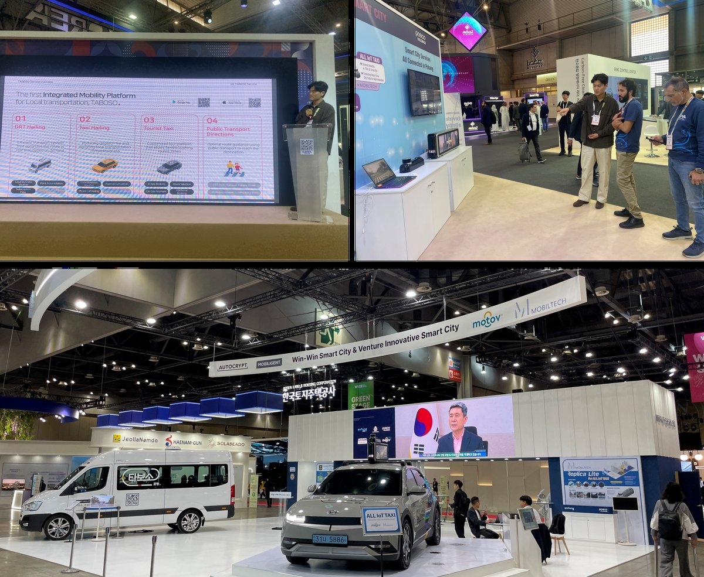
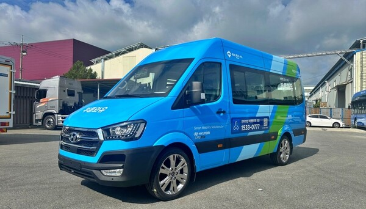
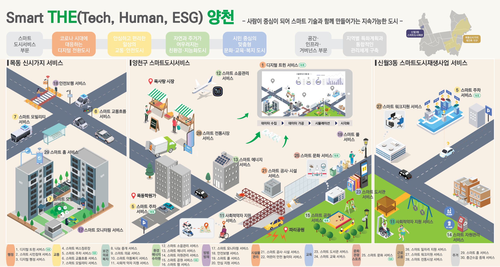
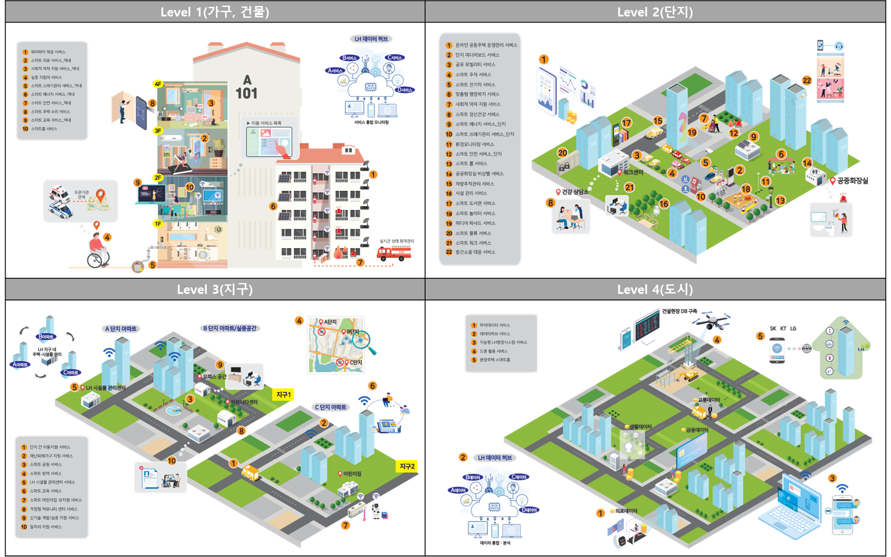
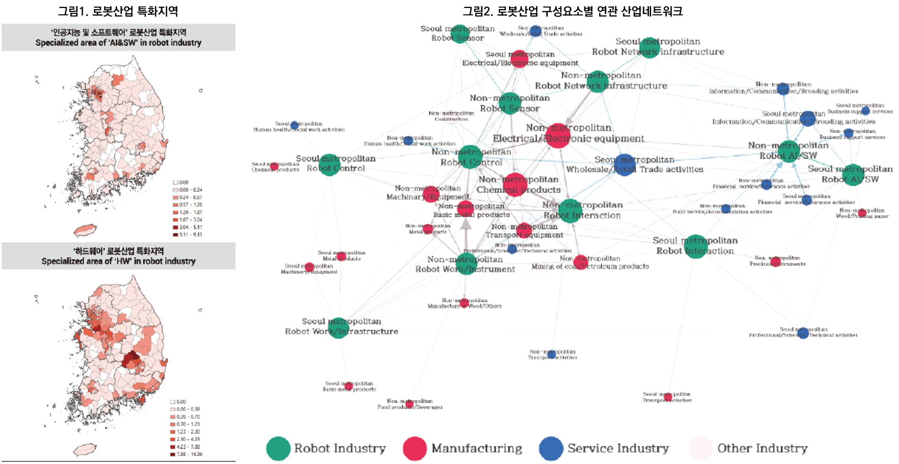

학력
| 기간 | 학교 | 전공 | 비고 |
|---|---|---|---|
| 2018.03~2020.08 | 서울대학교 환경대학원 | 환경계획학과 도시및지역계획 전공 (석사) | 우수논문상 수상 |
| 2011.03~2018.02 | 홍익대학교 | 도시공학과 (학사) | 우수졸업작품상 수상 |
경력 요약 (총 업무경력 4년)
| 기간 | 소속 | 직급/부서 | 핵심 역할 | 비고 |
|---|---|---|---|---|
| 2025.07~현재 (8개월) |
모빌리전트(주) | 과장 | 셔클 DRT 운영지역 관리, 모빌리티 신사업 기획 |
아우토크립트 대표 공동창업 벤처기업, 아우토크립트 겸직 중 |
| 2024.07~현재 (1년 8개월) |
아우토크립트(주) | 대리, 미래모빌리티전략실 MaaS/DRT사업팀 |
스마트시티 챌린지 사업 수행, 모빌리티 플랫폼 구축/운영, 신사업 기획 |
|
| 2021.01~2023.04 (2년 4개월) |
(주)정도UIT | 연구원, 스마트시티컨설팅부 |
스마트도시계획 수립, 공공 스마트시티 공모사업 제안 및 컨설팅 |
|
| 2018.12~2020.08 (1년 8개월) |
서울대학교 환경대학원 | 연구원 | 신산업 공간/네트워크 분석 연구, 스마트산업단지 특화계획 연구 |
|
| 2017.07~2018.02 (7개월) |
홍익대학교 도시공학과 | 보조연구원 | 네트워크 분석 기반 도시 상권 연구 |
핵심 역량
모빌리티 사업수행
DRT/택시/콜밴 플랫폼 기획·구축·운영, 정부 공모사업 수행 및 관리
스마트시티 컨설팅
스마트도시계획 수립, 조성사업 기획/제안, 리빙랩 운영, 거버넌스 구축
AI 활용 (Vibe Coding)
운행 데이터 자동 분석 및 리포트 생성 툴 개발, 모빌리티 플랫폼 PoC 데모 설계
데이터 분석
광역 데이터허브 구축, GIS 공간분석, 텍스트 분석, 네트워크 분석, 지역산업연관분석
사업 기획/제안
공공 공모사업 기획/제안, 해외 ODA 사업 기획/제안, 신사업 기획
이해관계자 관리
지자체 컨설팅, 중앙부처/지자체/민간기업 파트너십 구축, 운수사 관리, 시민참여 리빙랩
주요 프로젝트 상세
아우토크립트
2024.07 ~ 현재
1-1
포항 스마트시티 챌린지 본사업 — 스마트교통 분야
- 공공 통합 모빌리티 플랫폼 '타보소' 구축: 승객앱·기사앱·관리자시스템 3종 개발
- DRT: 쏠라티 16대, 다이나믹라우팅 기반 배차/노선, 5개 존 운영
- 공공형 택시호출: 배차수수료 무료, 포인트/지역화폐 자동결제 연동
- 서비스 유지보수 및 운영: 시스템 유지관리, 사용자 교육, 장애 대응
- 관련 계약 및 보조금 집행 관리, API 연동, 홍보 마케팅
- SCEWC(바르셀로나), WSCE(킨텍스) 등 국내외 전시 기획/참여


성과
- 앱 누적 가입자 3.2만명, 택시 기사 가입 1,100명 (포항 택시 40%)
- 택시 호출 월 1.5만건, 지역화폐 자동결제 비율 51.5%
- 2023 WSCE 어워즈 모빌리티 분야 수상, 규제샌드박스 승인
1-2
경상북도 광역 데이터허브 구축
- NGSI-LD 표준 기반 광역 데이터허브 구축 (경상북도 10개 시·12개 군)
- 8종 표준 + 17종 제안 데이터 모델 (버스, 택시 DTG, 교통카드, 유동인구 등)
- 교통분석 서비스: 대중교통 노선 분석 대시보드, 교통음영지역 DRT 도입 분석
- 교통음영지역 선정 및 노선 최적화, 유동인구 Hot Spot 분석
성과
포항시 8종 데이터셋 실시간 연동 완료, 경북 22개 지자체 확장 가능한 멀티테넌트 구조 구축
1-3
K-City Network 라오스 DRT 실증사업 기획
- 라오스 교통부 및 운수사 사업 참여 합의
- 비엔티안 BRT 정류장 연계 DRT 서비스 실증 기획 (3개월 POC)
- 승객앱/기사앱/관리자시스템 현지 맞춤 개발 기획 (지도/언어 현지화)
성과
자체 DRT 솔루션의 최초 해외 실증 사업 기획
모빌리전트
2025.07 ~ 현재
2-1
현대자동차 셔클 DRT 서비스지역 운영관리
- 인천 검단, 제천, 영덕, 양구, 강릉 등 7개+ 지자체 셔클 DRT 운영관리
- 신규 지역 오픈: 차량·운행환경 점검, 시스템 세팅, 운수사/기사 교육
- 운영 중 서비스 최적화: 정류장·노선·스케줄·정책 조정
- 운행 데이터 분석 기반 모니터링 및 이슈 발굴
- 지자체·운수사·플랫폼사 간 이해관계 조율 및 안정화 컨설팅

성과
- 서비스 지역 4개 이상 확장 (2025년 하반기~)
- 지역별 모니터링 리포트 자동생성 툴 구축: 핵심 지표 분석 체계 기반 데이터 자동 분석 및 리포트 생성
2-2
ALLGO AIR 콜밴 플랫폼 사업 기획
- 항공편 실시간 연동 기반 공항 이동 특화 콜밴 플랫폼 설계
- 콜밴 공급 조합 협력 기반 사업 기회 개발
- AI 다변수 매칭 엔진 기획: 수요조건과 공급조건 고려한 최적 배차
성과
KPI 목표: 인천공항 실증(콜밴 50대) 일 2백콜, 고객 3천명 확보
2-3
정부과제 사업계획서 기획 및 작성
- 모빌리티 플랫폼 구축 관련 공공사업 제안
- 민간 모빌리티 플랫폼 구축 및 운영 제안
정도UIT
2021.01 ~ 2023.04
3-1
양천구 스마트도시 중장기 마스터플랜 수립
- 8개 분야 종합 현황분석 (도시행정, 교통, 보건의료복지 등)
- 10개 분야 30개 스마트도시서비스 기획
- 시민 리빙랩 4회, 26개과 55개팀 공무원 부서면담 3회
- 목동신시가지 스마트인프라 가이드라인 수립

성과
- 경제적 파급효과: 생산유발 551.6억원, 부가가치유발 261.4억원
- 국토부 2022년 중소도시 스마트시티 조성 공모사업 서울시 자치구 중 유일 선정
3-2
양천구 중소도시 스마트시티 조성사업 기획 및 제안
- 학원 1,164개 밀집(양천구 59%), 불법주정차 5만건 등 데이터 기반 도시문제 정량분석
- 5대 스마트 솔루션: 학원차량 공유, 자전거 지킴이, 스마트 주정차 관리, 주차장 공유, 보행자 횡단안전
- KPI: 일자리 창출 60명+, 자전거 사고 20%↓, 불법주정차 단속 20%↑

성과
국토부 공모 선정
3-3
스마트시티 도시데이터 조사 및 활용방안 연구
- LH 내외부 332개 시스템, 1,467개 데이터 전수 조사
- 4단계 데이터 활용 프레임워크 설계
- 공간위계별 47개 스마트도시서비스 기획
- 서비스별 경제적 타당성 분석 (B/C, NPV, IRR)
- 전문가 평가 기반 서비스 우선순위 도출
- 이해관계자 분석 (LH/입주민/인근주민/지자체/기술업체)
- LH 데이터허브 구축 방안 제시

성과
LH 스마트도시서비스 구축 및 데이터허브 운영 전략 수립 기여
서울대학교 환경대학원
2018.12 ~ 2020.084-1. 석사학위논문 / 학술논문

4-2
세종 국가산업단지 특화전략 수립 연구
- 세종시 일반·산업·입지 현황 분석 및 SWOT 분석
- 11개 주요 산업 동향 조사
- 해외 벤치마킹 (독일, 스웨덴, 미국 RTP 등)
- 행정수도 산업구조 비교분석
- 스마트산단 6대 특화전략 수립
- 충청권 산업경쟁력 분석 및 특화산업 선정
성과
연구 보고서 납품 완료, 세종 국가산업단지 조성 방향 수립 기여
홍익대학교 학부연구실
2017.07 ~ 2018.025-1. 텍스트 네트워크 분석을 통한 홍대 상권 변화 연구

자격증 및 어학
| 구분 | 내용 | 취득일 |
|---|---|---|
| 자격증 | 도시계획기사 | 2020.09 |
| 어학 | IELTS 7.5 (General) | 2023.12(만료) |
| 어학 | OPIc IH | 2024.02(만료) |
| 어학 | TOEIC 960 | 2020.05(만료) |
수상
| 수상명 | 주최 | 일시 |
|---|---|---|
| 우수발표상 | 한국물리학회 가을학술대회 | 2020.11 |
| 우수논문상 | 서울대학교 환경대학원 | 2020.02 |
기술 스택
MS Office
고급
Ucinet / Gephi
고급 · 네트워크분석
Python
중급
QGIS
중급 · 공간분석
AI Vibe Coding
중급
Figma / Notion
중급
해외 경험
| 기간 | 내용 |
|---|---|
| 2023.07~2024.01 | 호주 시드니 워킹홀리데이 (어학연수) |
| 2015.09~2016.02 | 캄보디아 국제자원활동 (KB국민은행/한국YMCA) |
학술 논문
- 김한길, 이영성 (2021). "수도권과 비수도권 로봇산업의 경제적 파급효과 분석: 스마트 전문화의 관점에서", 국토계획, 대한국토도시계획학회
- Lee, M., Kim, H., & Cheon, S. (2021). "A Network Approach to Revealing Dynamic Succession Processes of Urban Land Use and User Experience", Sustainability, 13, 11955 (SCIE)